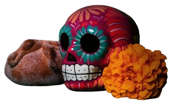

Aunque las fechas fuertes de esta celebración son el 1 y 2 de noviembre, es desde el 28 de octubre que se cree hay
almas que bajan a estar en este plano, ese día se ofrenda a los fallecidos de manera trágica, por violencia o accidentes;
el 30 y 31 son días dedicados a los niños que murieron sin haber sido bautizados.
Según el calendario católico designó el 1 de noviembre como el Día de Todos los Santos y corresponde a los niños o muertos chiquitos,
mientras que el 2 de noviembre es llamado el Día de los Muertos, es decir, todos los adultos.

La tradición de estas fiestas tiene un origen prehispánico, pues los mexicas celebraban a sus muertos después de la temporada de cosecha,
entre los meses de septiembre a noviembre. Esta tradición se sincretizó con las creencias de los conquistadores españoles, con ciertas
modificaciones, pero con la misma esencia.
En las ofrendas, colocamos ciertos elementos que muestran esta mezcla de creencias,
así como el amor que cada familia refleja en los arreglos de cada altar. No pueden faltar:
- Veladoras y cirios. Es la luz que guía y da paz y esperanza a las almas.
- Incienso. Es el aroma que purifica el ambiente.
- Agua. No puede faltar pues calma la sed de nuestros difuntos.
- Sal. Se coloca para que el espíritu que llega de visita no se pierda ni se corrompa durante su estancia en
el mundo de los vivos.
- Flor de cempasúchil. Se cree que su aroma y color ayudan a las almas a llegar hasta su ofrenda, que para este
2021 se logró una producción de 2 millones 800 mil plantas.
- Pan de muerto. Tradicional que por su forma representa el ciclo de la vida y la muerte.
- Fruta. Además de los alimentos preferidos de los difuntos, hay frutas tradicionales que se colocan en la ofrenda, como:
- Mandarina 302 mil 720 t.
- Caña 53 millones 841 mil 556 t.
- Guayaba 287 mil 243 t.
- Naranja 4 millones 648 mil 619 t.
- Jícama 8 mil 599 t.
- Calaveritas. En la antigüedad se utilizaban cráneos de verdad que después fueron sustituidas con calaveras hechas de azúcar,
chocolate o amaranto.
- Papel picado. no sólo le da color a la ofrenda, sino que representa el aire, uno de los cuatro elementos que debe estar
presente en cualquier ofrenda.
- Alimentos. Se acostumbra colocar los alimentos preferidos de los difuntos.
- Fotos. Se colocan las imágenes de las personas a quienes se les honra con esa ofrenda, siendo el detalle más
emotivo e importante.
En estas fechas, continúa con nuestra tradición, honra a tus difuntos y celebra la vida a través de la muerte,
llenando de color y sabor tu hogar con una ofrenda única.